모두앱 영상 — 맥락별 부품 조합
한눈에 보기
영상 탭 화면 270개를 사용자가 하려는 일 15가지로 나눴습니다. 칸의 숫자는 화면 수입니다.
| 맥락 | 세로 기본 · 단일채널 | 세로 기본 · 다채널 | 가로 확대 · 단일채널 | 가로 확대 · 다채널 | 세로에서 뜨는 창 | 가로에서 뜨는 창 | 결정 버튼(세로 / 가로) | 다른 곳 |
|---|---|---|---|---|---|---|---|---|
| 영상 보기 | 2 | 12 | 5 | 12 | - | - | - / - | 1 |
| 조작 버튼 꺼내기 | 2 | 6 | 2 | 6 | - | - | - / - | 2 |
| 영상이 안 나올 때 | 3 | 10 | 4 | 6 | - | - | - / - | 1 |
| 크게 보기(핀치 확대) | 2 | · | 4 | · | - | - | - / - | 1 |
| 화면 나누기(분할 수) | · | 15 | · | 15 | 바텀시트 | 가운데 팝업 | 확인 · 적용 · 닫기 X / 확인 · 적용 · 닫기 X | 3 |
| 화면 비율 바꾸기 | · | 12 | · | · | 토스트 | - | - / - | 1 |
| 다음 카메라 묶음 넘기기 | · | 14 | · | · | - | - | - / - | 2 |
| 다른 카메라 고르기 | · | · | 4 | · | - | 오른쪽 패널 | - / 닫기 X | 2 |
| 카메라 묶음 고르기(SVMS) | 4 | 4 | 4 | 4 | 바텀시트 | 가운데 팝업 | 닫기 X / 닫기 X | 1 |
| 지난 영상 날짜·시간 찾기 | 5 | 5 | 11 | 11 | 바텀시트 | 오른쪽 패널 · 가운데 팝업 | 확인 · 적용 · 시간 선택 · 취소 · 닫기 X / 확인 · 적용 · 시간 선택 · 취소 · 닫기 X | 3 |
| 재생·배속 조절 | 12 | 12 | 12 | 12 | 토스트 | 토스트 | - / - | 1 |
| 움직임·이벤트 찾아보기 | 7 | · | 9 | · | 바텀시트 | 오른쪽 패널 · 가운데 팝업 | 적용 · 닫기 X / 적용 · 닫기 X | 2 |
| 화면 저장(캡쳐) | 2 | · | 2 | 1 | 토스트 | 토스트 | - / - | 1 |
| 카메라 방향 돌리기(PTZ) | 9 | · | 1 | · | 바텀시트 | 토스트 | 닫기 X / - | 2 |
| 기타 메뉴(더보기) | 1 | 2 | 2 | 2 | 바텀시트 | 가운데 팝업 | 닫기 X / 닫기 X | 0 |
맥락을 가로질러 보이는 규칙
- 모든 조작의 입구는 딤
세로·가로 모두 영상을 한 번 눌러야 화면 구성·비율·더보기·PTZ·레이아웃 버튼이 나온다. 평소 화면에는 영상과 시각만. - 겹쳐 뜨는 창은 방향에 따라 바뀐다
세로는 늘 바텀시트. 가로는 짧게 고르고 닫는 것(화면 구성·더보기·레이아웃 리스트)은 가운데 팝업, 영상을 보면서 오래 보는 것(카메라 목록·날짜·이벤트)은 오른쪽 패널. - 결과 알림은 토스트 하나로, 자리는 늘 영상 아래 가운데
배속·멈춤·30초 이동·캡쳐·비율·배율처럼 바로 끝나는 일은 창 없이 토스트로만 알린다. 세로·가로 모두 영상 아래 가운데에 뜬다. - 목록에서 하나 고르는 창은 결정 버튼이 없다
레이아웃 리스트·PTZ 속도·카메라 목록은 줄을 누르면 바로 바뀐다(체크 표시). 화면 구성·날짜·이벤트 종류처럼 여러 값을 맞추는 창만 확인/적용 버튼이 있다. - 세로 화면 틀은 늘 같다
헤더·칩·탭바·기기 내비게이션 바는 세로 141화면 모두에 있고, 시트가 열려도 아래에 깔려 있다. - 녹화는 세로에 줄이 세 개 더 붙는다
영상 아래에 재생 컨트롤 줄 → 달력·시각·캡쳐 줄 → 시간바가 차례로 붙는다.
영상 보기
영상 탭에 들어와 지금 현장 카메라를 본다
실시간·기본(단일채널)
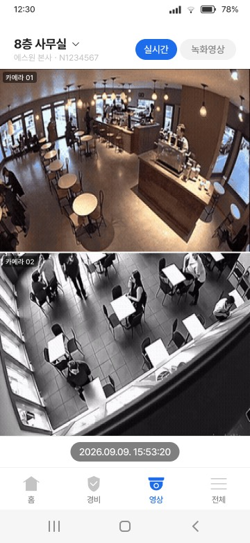
실시간·기본(다채널)
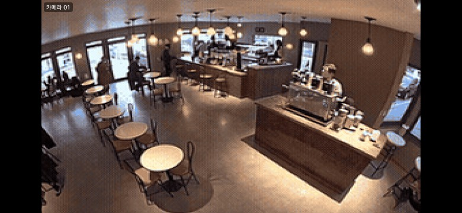
실시간·확대(단일채널)
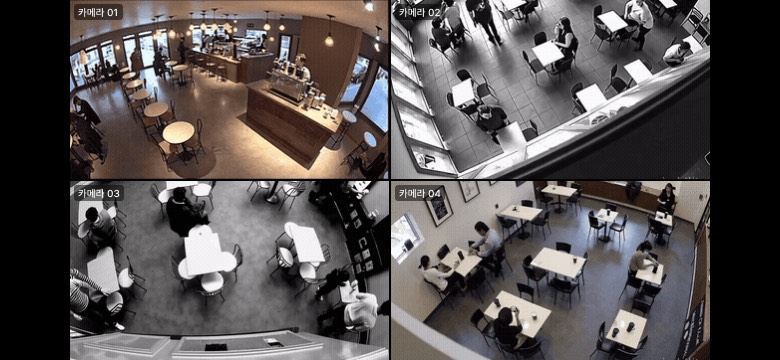
실시간·확대(다채널)
들어오기
- 하단 탭바 "영상" 누르기
- 홈에서 특정 카메라 누르기 → 그 칸에 파란 테두리
나가기
- 다른 탭으로 이동
- 위 칩으로 실시간 ↔ 녹화영상 바꾸기
쓰는 부품
파란 칩 = 부품 묶음, 회색 칩 = 이 맥락 화면의 절반 이상에 나오는 부품(비율)
어디에 어떻게 놓이나
세로
- 맨 위: 상단 현장 헤더(현장명 ▾ + 고객번호) · 오른쪽 실시간/녹화영상 칩
- 가운데: 영상 칸 — 단일 1칸 / 다채널 1×2·1×3·2×4
- 영상 바로 아래: 시각 알약(단일은 오른쪽 캡쳐 버튼) · 녹화는 재생 컨트롤 줄 → 달력·시각·캡쳐 줄 → 시간바
- 그 아래(단일만): 카메라 목록 2열 썸네일
- 맨 아래: 하단 탭바(영상 활성) · 기기 내비게이션 바
가로
- 영상만 화면 가득(단일은 좌우 검은 여백, 다채널 2×2·3×3·4×4)
- 버튼은 하나도 없음 — 화면을 눌러야 나옴
- 설정 "시간 항상 표시"를 켜면 시각 알약만 계속 보임
같은 일인데 다르게 만든 곳
- 카메라 목록은 세로 단일채널에만 영상 아래 붙고, 세로 다채널에는 없음 (11:14055 · 11:25752)
조작 버튼 꺼내기
영상을 한 번 눌러 숨어 있던 조작 버튼을 꺼낸다
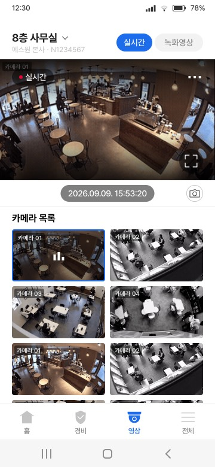
실시간·기본(단일채널)
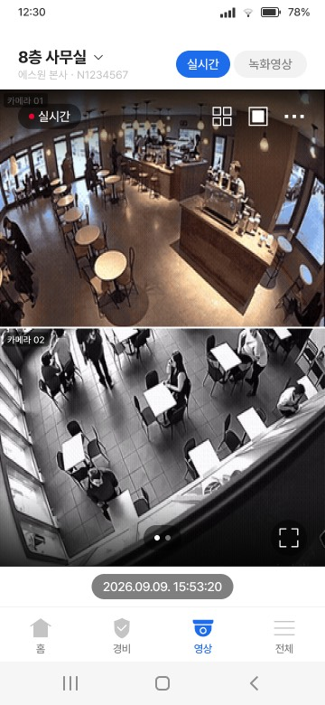
실시간·기본(다채널)
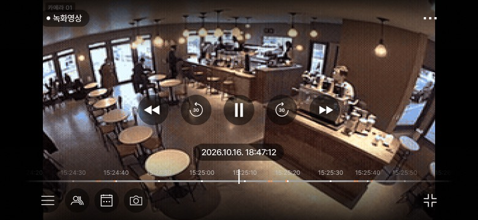
녹화영상·확대(단일채널)
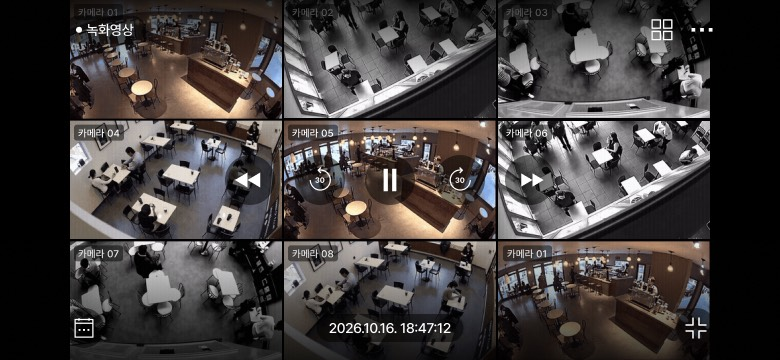
녹화영상·확대(다채널)
들어오기
- 영상 칸 한 번 누르기
나가기
- 다시 누르기
- 시간이 지나면 저절로 사라짐
쓰는 부품
파란 칩 = 부품 묶음, 회색 칩 = 이 맥락 화면의 절반 이상에 나오는 부품(비율)
어디에 어떻게 놓이나
세로
- 영상 위·아래에 검은 그라데이션(위 80 · 아래 80)
- 왼쪽 위: 모드 배지(● 실시간 빨간 점 / 녹화영상)
- 오른쪽 위: 아이콘 줄 — 화면 구성 · 화면 비율 · (PTZ) · (레이아웃) · 더보기 ⋯
- 아래 가운데: 페이지 점(다채널) · 오른쪽 아래: 전체화면 버튼
가로
- 그라데이션(위 80 · 아래 120)
- 왼쪽 위: 모드 배지 · 오른쪽 위: 화면 구성·더보기 ⋯
- 아래 줄 왼쪽: 메뉴 ≡ · 움직임 감지 · 달력 · 캡쳐 / 가운데: 시각 / 오른쪽: 축소 버튼
- 녹화는 가운데에 둥근 재생 버튼 5개 + 아래 시간바
같은 일인데 다르게 만든 곳
- 세로 단일채널 딤에는 화면 구성·화면 비율 버튼이 없고 배지·더보기·전체화면만 (11:16870)
- 캡쳐 버튼이 세로는 딤 밖(시각 줄 오른쪽)에 늘 보이고, 가로는 딤 안 아래 줄에만 있음 (11:14055 · 11:21241)
영상이 안 나올 때
영상이 안 나올 때 왜 그런지 알아챈다
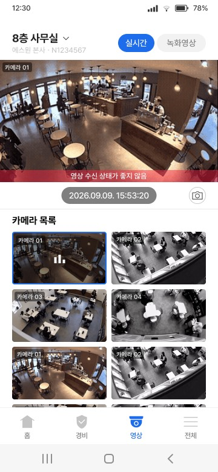
실시간·기본(단일채널)
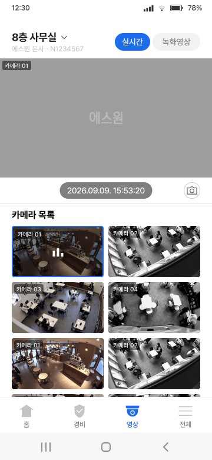
실시간·기본(단일채널)
실시간·기본(단일채널)
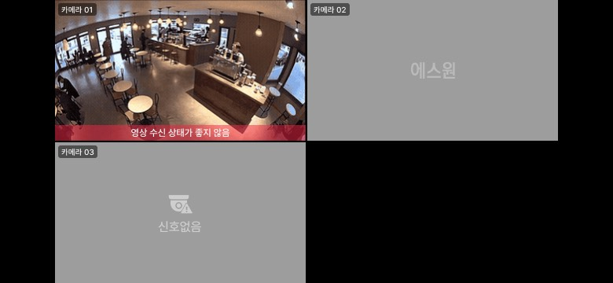
실시간·확대(다채널)
들어오기
- 시스템 상태(네트워크 나쁨·카메라 연결 없음·신호 끊김)가 바뀌면 저절로
나가기
- 상태가 돌아오면 저절로
쓰는 부품
파란 칩 = 부품 묶음, 회색 칩 = 이 맥락 화면의 절반 이상에 나오는 부품(비율)
어디에 어떻게 놓이나
세로
- 화면 틀(헤더·칩·시각·탭바)은 그대로, 영상 칸 안만 바뀜
- 수신 불량: 영상 아래쪽 빨간 띠 "영상 수신 상태가 좋지 않음" — 영상은 계속 보임
- 카메라 없음: 회색 칸 + 가운데 "에스원" 로고
- 신호 없음: 회색 칸 + 카메라 경고 아이콘 + "신호없음"
가로
- 같은 표시가 칸마다 따로 — 다채널은 한 화면에 섞여 나옴
- 빈 칸(카메라 숨김)은 검은 칸
같은 일인데 다르게 만든 곳
- 카메라 없음만 글 안내가 없고 로고뿐 — 사용자가 이유를 알기 어려움 (11:14192)
크게 보기(핀치 확대)
영상 한 부분을 손가락으로 크게 본다
들어오기
- 두 손가락 벌리기
나가기
- 두 손가락 오므리기
- 두 번 누르기
쓰는 부품
파란 칩 = 부품 묶음, 회색 칩 = 이 맥락 화면의 절반 이상에 나오는 부품(비율)
어디에 어떻게 놓이나
세로
- 영상 칸만 확대 · 영상 칸 아래 가운데 배율 알약 "1.5X" → 돌아오면 "원본"
가로
- 화면 아래 가운데 배율 알약 "1.5X" → "원본"
같은 일인데 다르게 만든 곳
- 단일채널에서만 정의 — 다채널에서 손가락 확대가 되는지는 없음 (-)
화면 나누기(분할 수)
한 화면에 카메라를 몇 대 볼지 고른다
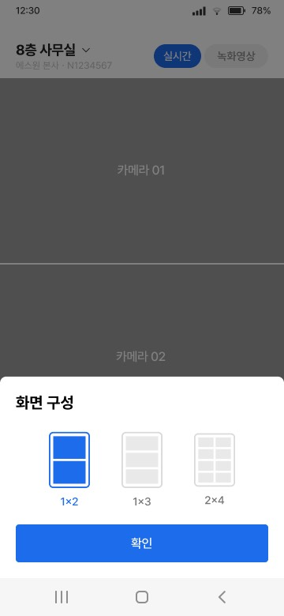
실시간·기본(다채널)
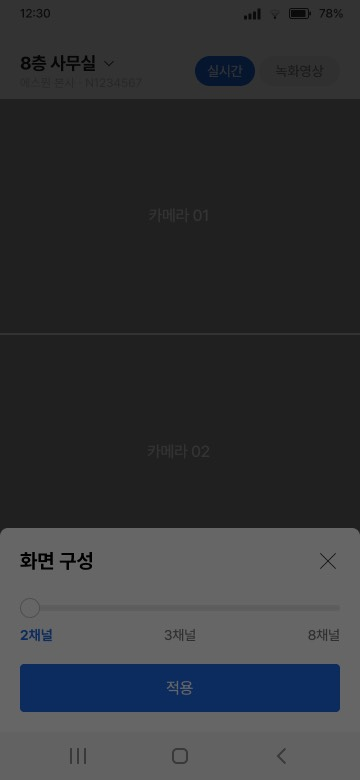
실시간·기본(다채널)
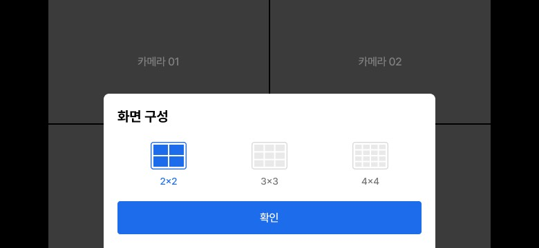
실시간·확대(다채널)
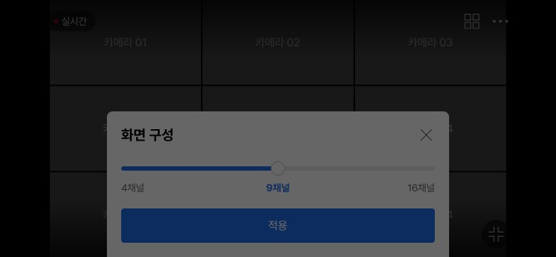
실시간·확대(다채널)
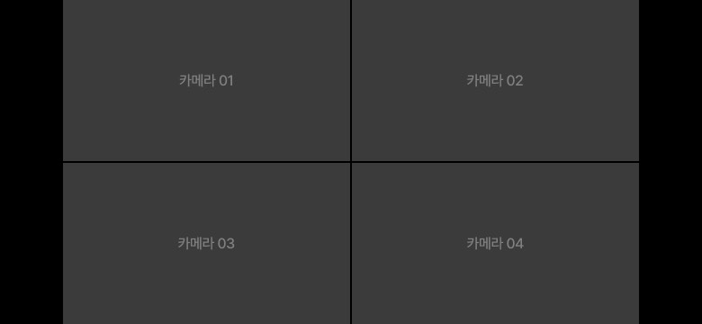
실시간·확대(다채널)
들어오기
- 딤 → 오른쪽 위 화면 구성(격자) 버튼
나가기
- 확인/적용 → 고른 격자 화면
- 닫기 X
쓰는 부품
파란 칩 = 부품 묶음, 회색 칩 = 이 맥락 화면의 절반 이상에 나오는 부품(비율)
어디에 어떻게 놓이나
세로
- 아래에서 올라오는 바텀시트 "화면 구성"
- 시트 뒤 영상은 회색 칸 + 카메라 이름으로 미리보기
- A안: 배치 그림 카드 3개(1×2·1×3·2×4) + 확인(녹화는 X + 적용) / B안: 2·3·8채널 슬라이더 + X + 적용
가로
- 가운데 팝업 "화면 구성"(폭 최대 480)
- A안: 격자 그림 3개(2×2·3×3·4×4) + 확인 / B안: 4·9·16채널 슬라이더 + X + 적용
같은 일인데 다르게 만든 곳
- 한 기능에 시안 두 가지(그림 카드 / 슬라이더)가 함께 있음 — 어느 쪽인지 정해야 함 (11:27272 · 11:27386)
- 실시간 그림 카드 안은 "확인" + 닫기 X 없음, 녹화 그림 카드 안은 "적용" + X 있음 — 같은 창인데 버튼이 다름 (11:27272 · 11:23842)
- 실시간 그림 카드 안에는 닫기 X가 없어 닫는 방법이 안 보임 (11:27272 · 11:20105)
화면 비율 바꾸기
영상을 원래 비율로 볼지, 칸에 꽉 채울지 바꾼다
들어오기
- 딤 → 오른쪽 위 화면 비율 버튼
나가기
- 한 번 누를 때마다 바로 바뀜(창 없음)
쓰는 부품
파란 칩 = 부품 묶음, 회색 칩 = 이 맥락 화면의 절반 이상에 나오는 부품(비율)
어디에 어떻게 놓이나
세로
- 영상 아래 가운데 토스트 "원본 비율 유지"(검은 여백 생김) ↔ "화면 채우기"(꽉 채움)
- 버튼 아이콘도 상태에 따라 ↔ / 네모로 바뀜
가로
- 정의 없음
같은 일인데 다르게 만든 곳
- 세로 다채널에만 있음 — 단일채널·가로에서는 비율을 못 바꿈 (-)
다음 카메라 묶음 넘기기
분할 칸보다 카메라가 많을 때 다음 묶음으로 넘긴다
들어오기
- 영상 격자를 좌우로 밀기
나가기
- -
쓰는 부품
파란 칩 = 부품 묶음, 회색 칩 = 이 맥락 화면의 절반 이상에 나오는 부품(비율)
어디에 어떻게 놓이나
세로
- 딤 아래 가운데 페이지 점(지금 페이지 흰색)
- 1페이지면 점 없음 · 2~5개는 모두 · 6개 이상은 5개만 + 끝 점 작게 · 7개 이상 넘길 때 양 끝 작게
가로
- 정의 없음
같은 일인데 다르게 만든 곳
- 가로 다채널(4·9·16칸)에서 다음 묶음으로 넘기는 방법이 없음 (-)
- 페이지 점이 딤이 떠 있을 때만 보임 — 평소에는 몇 페이지인지 모름 (11:25752)
다른 카메라 고르기
지금 보는 카메라를 다른 카메라로 바꾼다
실시간·기본(단일채널)
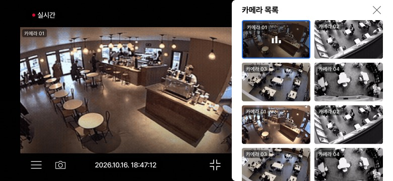
실시간·확대(단일채널)
녹화영상·확대(단일채널)
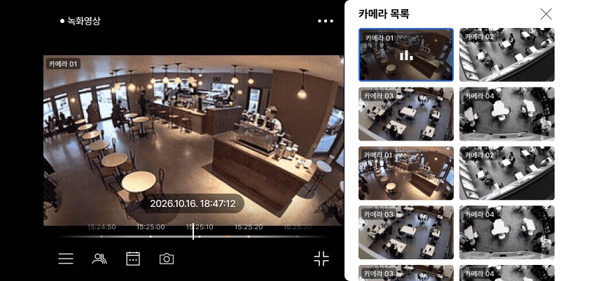
녹화영상·확대(단일채널)
들어오기
- 세로 단일: 영상 아래 카메라 목록에서 바로 고르기
- 가로: 딤 → 아래 왼쪽 메뉴 ≡(실시간) / 카메라 목록 버튼(녹화)
나가기
- 썸네일 고르기
- 닫기 X
쓰는 부품
파란 칩 = 부품 묶음, 회색 칩 = 이 맥락 화면의 절반 이상에 나오는 부품(비율)
어디에 어떻게 놓이나
세로
- 영상 아래 "카메라 목록" 2열 썸네일 — 고른 칸 파란 테두리 + 재생 중 막대
가로
- 오른쪽 패널 "카메라 목록" — 영상은 왼쪽으로 작아짐
- 녹화는 패널 위에 "움직임 감지" 탭이 붙음
같은 일인데 다르게 만든 곳
- 다채널은 카메라 목록이 없어 다른 카메라를 고르는 방법이 페이지 넘김뿐 (-)
- 녹화 가로 패널: 안드로이드는 "카메라 목록 | 움직임 감지" 탭, iOS는 "카메라 목록" 제목만 — 같은 기능인데 기기마다 패널 모양이 다름 (11:31864 · 11:23003)
카메라 묶음 고르기(SVMS)
(SVMS 고객) 미리 묶어 둔 카메라 묶음을 고른다
들어오기
- 딤 → 오른쪽 위 레이아웃(별 폴더) 버튼 — SVMS 고객에게만 보임
나가기
- 목록에서 고르기
- 닫기 X
쓰는 부품
파란 칩 = 부품 묶음, 회색 칩 = 이 맥락 화면의 절반 이상에 나오는 부품(비율)
어디에 어떻게 놓이나
세로
- 바텀시트 "레이아웃 리스트" + X · 목록, 고른 줄 파란 글씨 + 체크
가로
- 가운데 팝업 "레이아웃 리스트" + X
같은 일인데 다르게 만든 곳
- 결정 버튼 없이 줄을 누르면 체크로 바로 바뀜 — 화면 구성·날짜처럼 버튼을 눌러 바꾸는 창과 방식이 다름 (11:17006)
지난 영상 날짜·시간 찾기
(녹화) 보고 싶은 날짜·시각으로 이동한다
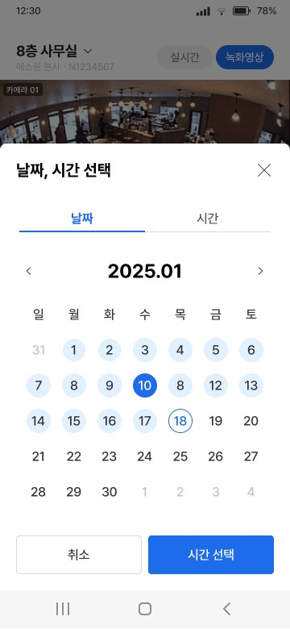
녹화영상·기본(단일채널)
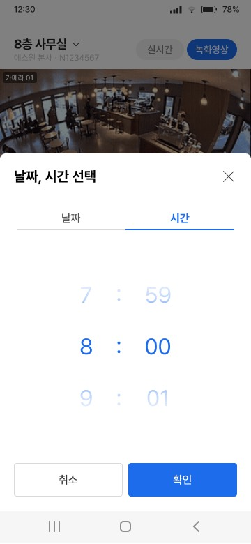
녹화영상·기본(단일채널)
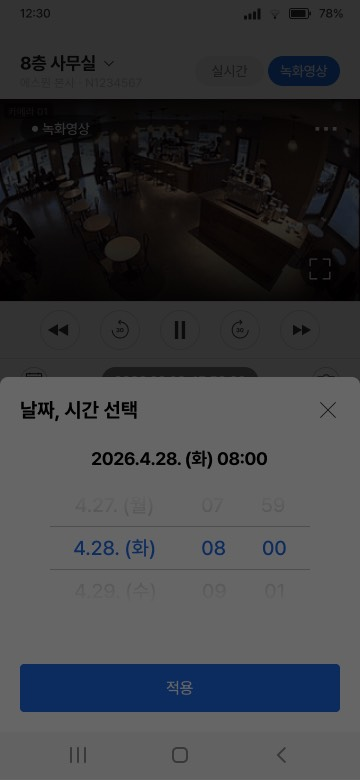
녹화영상·기본(단일채널)
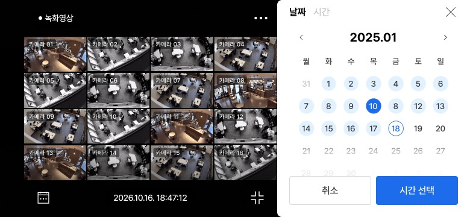
녹화영상·확대(다채널)
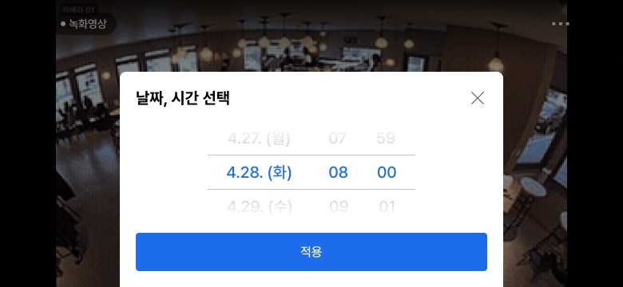
녹화영상·확대(단일채널)
들어오기
- 세로: 시각 줄 왼쪽 달력 버튼
- 가로: 딤 → 아래 달력 버튼
나가기
- 확인 → 그 시각부터 재생
- 취소 / 닫기 X
쓰는 부품
파란 칩 = 부품 묶음, 회색 칩 = 이 맥락 화면의 절반 이상에 나오는 부품(비율)
어디에 어떻게 놓이나
세로
- 바텀시트 "날짜, 시간 선택" + X
- 날짜 탭: 달력(녹화 있는 날 하늘색, 오늘 테두리) + [취소][시간 선택]
- 시간 탭: 시·분 휠 + [취소][확인]
- 다른 안: 날짜·시·분 휠 하나 + [적용]
가로
- 오른쪽 패널(날짜/시간 탭 + X) — 흐름은 세로와 같음
- 다른 안: 가운데 팝업 휠 + [적용]
같은 일인데 다르게 만든 곳
- 달력 시작 요일이 단일채널은 일요일, 다채널은 월요일 (11:16064 · 11:28179)
- 한 기능에 두 안(탭 + 달력 / 휠 하나)이 함께 있음, 결정 버튼도 확인·적용으로 다름 (11:16064 · 11:16773)
- 같은 날짜 탭 버튼이 처음엔 "시간 선택", 다시 열면 "확인" (11:16064 · 11:16308)
재생·배속 조절
(녹화) 재생·멈춤·빨리감기·30초 이동을 한다
녹화영상·기본(단일채널)
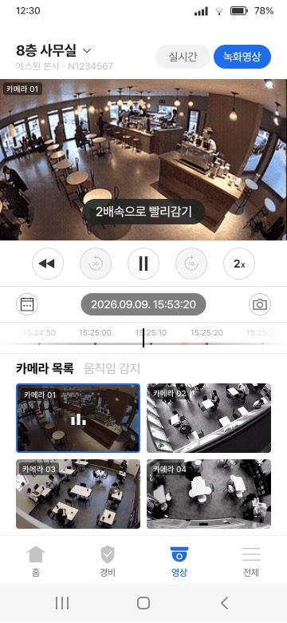
녹화영상·기본(단일채널)
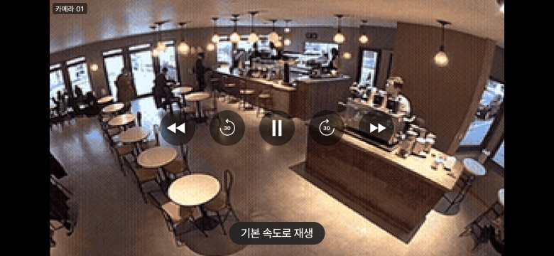
녹화영상·확대(단일채널)
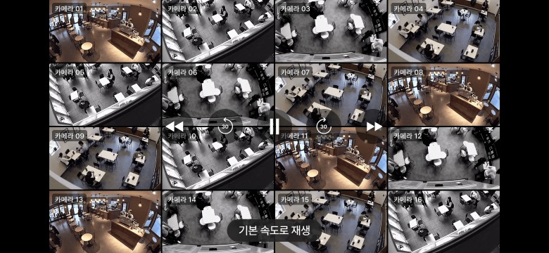
녹화영상·확대(다채널)
들어오기
- 세로: 영상 아래 재생 컨트롤 줄
- 가로: 딤 가운데 둥근 버튼 5개
나가기
- -
쓰는 부품
파란 칩 = 부품 묶음, 회색 칩 = 이 맥락 화면의 절반 이상에 나오는 부품(비율)
어디에 어떻게 놓이나
세로
- 영상 아래 흰 줄: 되감기 · 30초 뒤로 · 재생/멈춤 · 30초 앞으로 · 빨리감기
- 누르면 영상 아래 가운데 토스트("기본 속도로 재생", "2배속으로 빨리감기", "30초 뒤로")
- 배속 중엔 빨리감기 자리에 "2x" 같은 배속 표시, 30초 버튼은 흐려짐
가로
- 딤 가운데 어두운 원형 버튼 5개 · 아래 시각 + 시간바
- 토스트는 화면 아래 가운데
- 다채널은 버튼이 격자 위에 겹침
같은 일인데 다르게 만든 곳
- 녹화 다채널 "재생" 화면의 위 칩이 "실시간"으로 눌려 있음 (11:24841)
움직임·이벤트 찾아보기
(녹화) 움직임·이벤트가 있던 시점을 찾아 본다
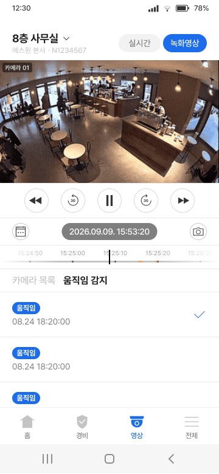
녹화영상·기본(단일채널)
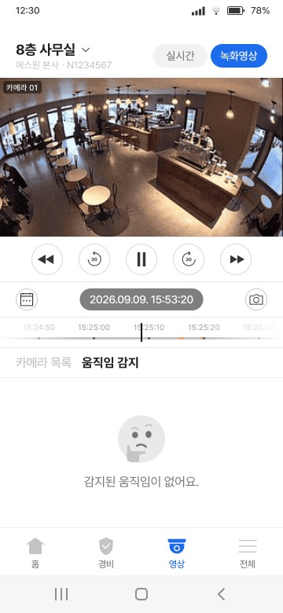
녹화영상·기본(단일채널)
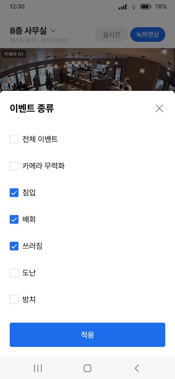
녹화영상·기본(단일채널)
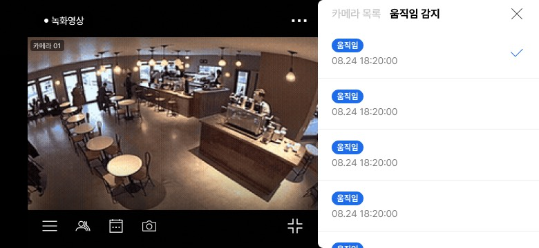
녹화영상·확대(단일채널)
들어오기
- 세로: 카메라 목록 옆 "움직임 감지" 탭 / SVMS는 "이벤트 목록" 탭
- 가로: 오른쪽 패널의 움직임 감지·이벤트 목록 탭
나가기
- 기록 누르기 → 그 시점 재생(추정)
쓰는 부품
파란 칩 = 부품 묶음, 회색 칩 = 이 맥락 화면의 절반 이상에 나오는 부품(비율)
어디에 어떻게 놓이나
세로
- 영상·재생 줄 아래 탭 줄: 카메라 목록 | 움직임 감지(또는 이벤트 목록)
- 기록: 파란 "움직임" 칩 + 일시, 고른 줄 체크
- 없으면 그림 + "감지된 움직임이 없어요."
- SVMS: "이벤트 전체 ▾" 거르기 → 이벤트 종류 바텀시트(체크 + 적용)
가로
- 오른쪽 패널 안 같은 탭 구성
같은 일인데 다르게 만든 곳
- "이벤트 전체 ▾" 거르기 자리가 시안 01(탭 아래 줄)과 시안 02(탭 줄 오른쪽)로 두 가지 (11:14838 · 11:14908)
- 빈 화면 그림이 움직임 감지와 이벤트 목록에서 같은 그림 — 글만 다름 (11:15150 · 11:15195)
화면 저장(캡쳐)
지금 화면을 사진으로 저장한다
들어오기
- 세로: 시각 줄 오른쪽 카메라 버튼
- 가로: 딤 아래 줄 카메라 버튼
나가기
- 토스트가 잠깐 뜨고 끝
쓰는 부품
파란 칩 = 부품 묶음, 회색 칩 = 이 맥락 화면의 절반 이상에 나오는 부품(비율)
어디에 어떻게 놓이나
세로
- 영상 아래 가운데 토스트 "현재 화면이 캡쳐되었어요"
가로
- 화면 아래 가운데 같은 토스트
같은 일인데 다르게 만든 곳
- 가로 다채널에서는 캡쳐 버튼 자리가 정의되지 않음 (11:19586)
카메라 방향 돌리기(PTZ)
(PTZ 카메라) 카메라 방향과 확대를 직접 조종한다
실시간·기본(단일채널)
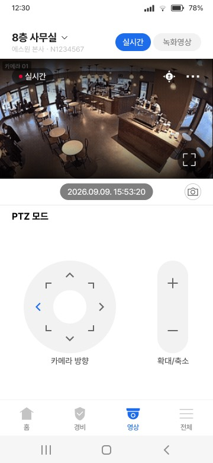
실시간·기본(단일채널)
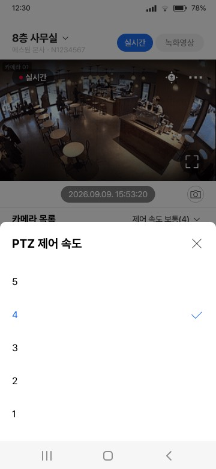
실시간·기본(단일채널)
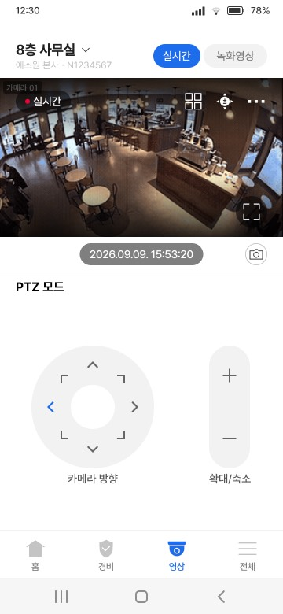
실시간·확대(단일채널)
들어오기
- 딤 → 오른쪽 위 PTZ 버튼(꺼짐 → 켜짐)
나가기
- PTZ 버튼 다시 누르기
쓰는 부품
파란 칩 = 부품 묶음, 회색 칩 = 이 맥락 화면의 절반 이상에 나오는 부품(비율)
어디에 어떻게 놓이나
세로
- 카메라 목록 자리가 "PTZ 모드" 조종판으로 바뀜: 원형 방향 패드 + 확대/축소 세로 막대
- 속도 기능이 있으면 "제어 속도 보통(4) ▾" → 바텀시트 "PTZ 제어 속도" 5~1 목록(체크, 결정 버튼 없음)
가로
- 가로에서 PTZ를 켜면 세로 화면으로 바뀜
같은 일인데 다르게 만든 곳
- 가로에서 켜면 화면이 세로로 돌아감 — 기기를 가로로 든 사용자에게 갑작스러울 수 있음 (11:17446)
- 속도 버튼 "제어 속도 보통(4) ▾"이 PTZ 조종판이 아니라 카메라 목록 제목줄 오른쪽에 있음 — 확인 필요 (11:17356)
기타 메뉴(더보기)
상세 설정·원격지원요청·방문점검신청으로 간다
들어오기
- 딤 → 오른쪽 위 더보기 ⋯
나가기
- 항목 고르기
- 닫기 X
쓰는 부품
파란 칩 = 부품 묶음, 회색 칩 = 이 맥락 화면의 절반 이상에 나오는 부품(비율)
어디에 어떻게 놓이나
세로
- 바텀시트 "더보기" + X · 글자 메뉴 3줄
가로
- 가운데 팝업 "더보기" + X(폭 최대 480, 높이 화면의 80%)
같은 일인데 다르게 만든 곳
- 다르게 만든 곳 없음
다르게 만든 곳 모아 보기
디자인을 하나로 맞출지 정해야 하는 곳입니다.
- 영상 보기 — 카메라 목록은 세로 단일채널에만 영상 아래 붙고, 세로 다채널에는 없음
- 조작 버튼 꺼내기 — 세로 단일채널 딤에는 화면 구성·화면 비율 버튼이 없고 배지·더보기·전체화면만
- 조작 버튼 꺼내기 — 캡쳐 버튼이 세로는 딤 밖(시각 줄 오른쪽)에 늘 보이고, 가로는 딤 안 아래 줄에만 있음
- 영상이 안 나올 때 — 카메라 없음만 글 안내가 없고 로고뿐 — 사용자가 이유를 알기 어려움
- 크게 보기(핀치 확대) — 단일채널에서만 정의 — 다채널에서 손가락 확대가 되는지는 없음
- 화면 나누기(분할 수) — 한 기능에 시안 두 가지(그림 카드 / 슬라이더)가 함께 있음 — 어느 쪽인지 정해야 함
- 화면 나누기(분할 수) — 실시간 그림 카드 안은 "확인" + 닫기 X 없음, 녹화 그림 카드 안은 "적용" + X 있음 — 같은 창인데 버튼이 다름
- 화면 나누기(분할 수) — 실시간 그림 카드 안에는 닫기 X가 없어 닫는 방법이 안 보임
- 화면 비율 바꾸기 — 세로 다채널에만 있음 — 단일채널·가로에서는 비율을 못 바꿈
- 다음 카메라 묶음 넘기기 — 가로 다채널(4·9·16칸)에서 다음 묶음으로 넘기는 방법이 없음
- 다음 카메라 묶음 넘기기 — 페이지 점이 딤이 떠 있을 때만 보임 — 평소에는 몇 페이지인지 모름
- 다른 카메라 고르기 — 다채널은 카메라 목록이 없어 다른 카메라를 고르는 방법이 페이지 넘김뿐
- 다른 카메라 고르기 — 녹화 가로 패널: 안드로이드는 "카메라 목록 | 움직임 감지" 탭, iOS는 "카메라 목록" 제목만 — 같은 기능인데 기기마다 패널 모양이 다름
- 카메라 묶음 고르기(SVMS) — 결정 버튼 없이 줄을 누르면 체크로 바로 바뀜 — 화면 구성·날짜처럼 버튼을 눌러 바꾸는 창과 방식이 다름
- 지난 영상 날짜·시간 찾기 — 달력 시작 요일이 단일채널은 일요일, 다채널은 월요일
- 지난 영상 날짜·시간 찾기 — 한 기능에 두 안(탭 + 달력 / 휠 하나)이 함께 있음, 결정 버튼도 확인·적용으로 다름
- 지난 영상 날짜·시간 찾기 — 같은 날짜 탭 버튼이 처음엔 "시간 선택", 다시 열면 "확인"
- 재생·배속 조절 — 녹화 다채널 "재생" 화면의 위 칩이 "실시간"으로 눌려 있음
- 움직임·이벤트 찾아보기 — "이벤트 전체 ▾" 거르기 자리가 시안 01(탭 아래 줄)과 시안 02(탭 줄 오른쪽)로 두 가지
- 움직임·이벤트 찾아보기 — 빈 화면 그림이 움직임 감지와 이벤트 목록에서 같은 그림 — 글만 다름
- 화면 저장(캡쳐) — 가로 다채널에서는 캡쳐 버튼 자리가 정의되지 않음
- 카메라 방향 돌리기(PTZ) — 가로에서 켜면 화면이 세로로 돌아감 — 기기를 가로로 든 사용자에게 갑작스러울 수 있음
- 카메라 방향 돌리기(PTZ) — 속도 버튼 "제어 속도 보통(4) ▾"이 PTZ 조종판이 아니라 카메라 목록 제목줄 오른쪽에 있음 — 확인 필요